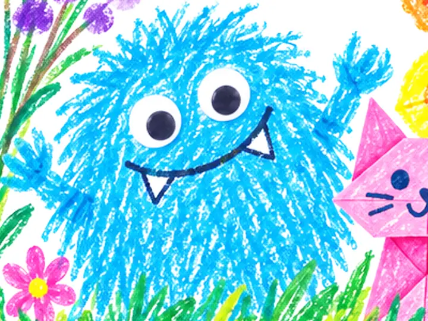
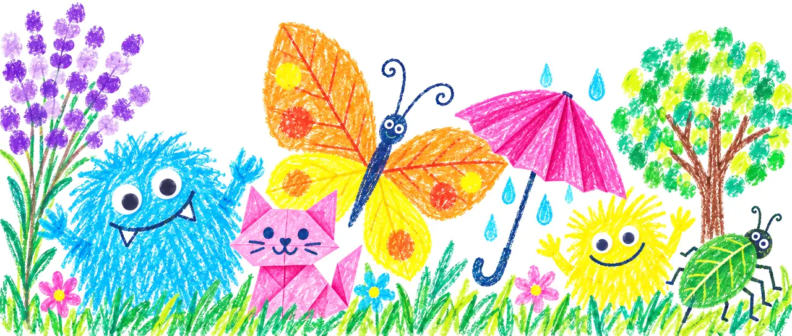
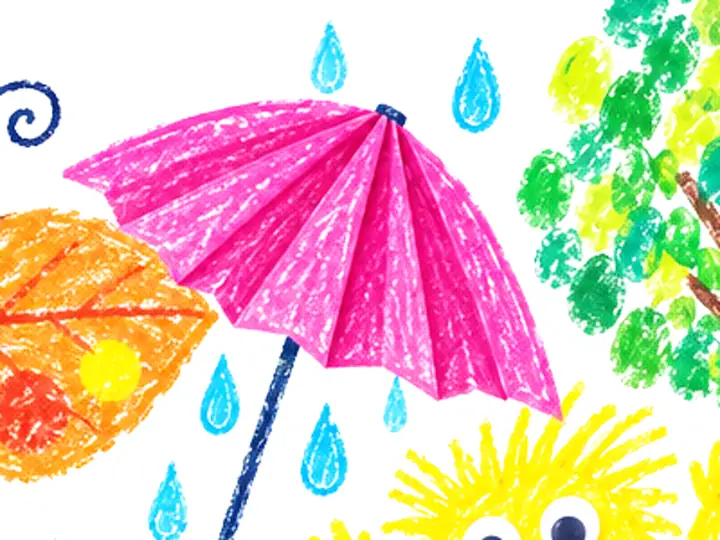
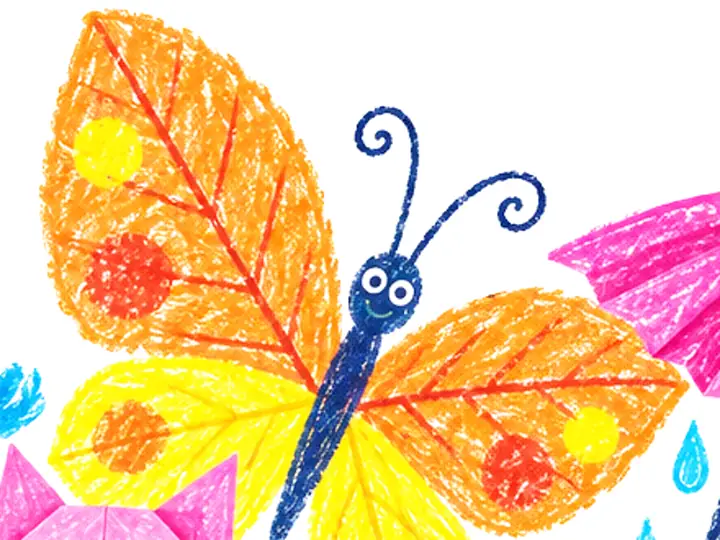
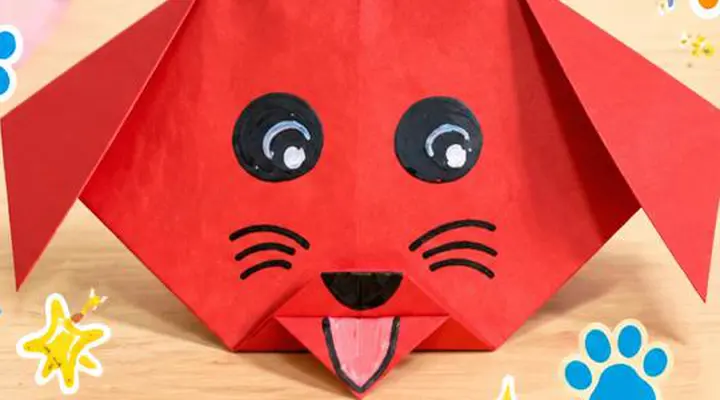
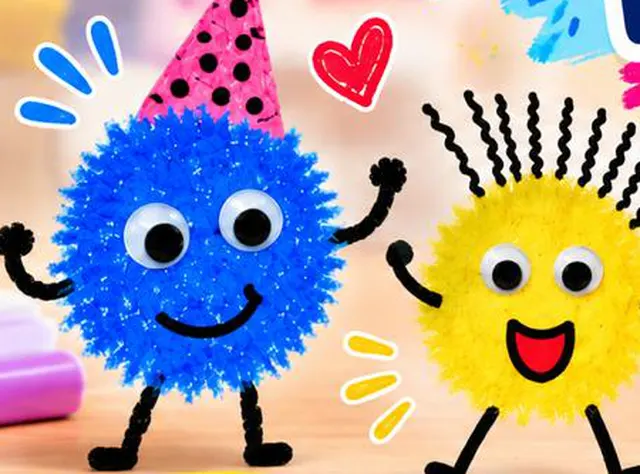
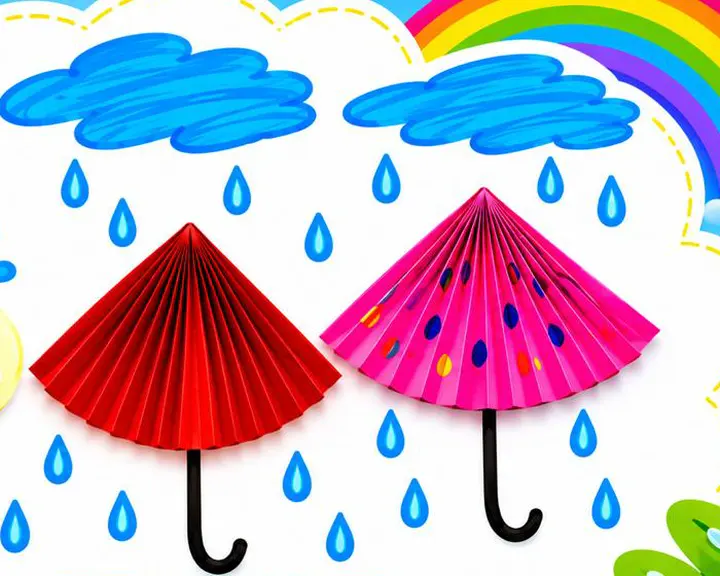

start here!
starter
₹199
- 2 craft workshops
- 2 parent guides
- 6 months access
Creative craft courses for ages 4 to 10


₹199

₹299

₹799Regular price ₹1,50047% off









Choose a pack
Watch right away
Show us what you made
Specially designed for children aged 4 to 10 years old. Younger children (ages 4–6) enjoy sensory play with light parent assistance, while older children (6+) can independently explore and master the crafts.
Not at all! All activities use simple, everyday materials you already have at home, such as basic crayons, plain drawing paper, pencils, safety scissors, and fallen leaves or pebbles.
These are pre-recorded high-definition video workshops. The Explorer Pack and Full Course include 12 full months of access, and the Starter Pack includes 6 months. Your child can watch, pause, rewind, and create anytime that fits your family's routine.
Access is instant! As soon as payment is complete, you can watch right in your browser, and direct login links are sent to your WhatsApp and email.
Yes! Inside your student dashboard, you can easily upgrade to unlock all remaining workshops and guides at any time.